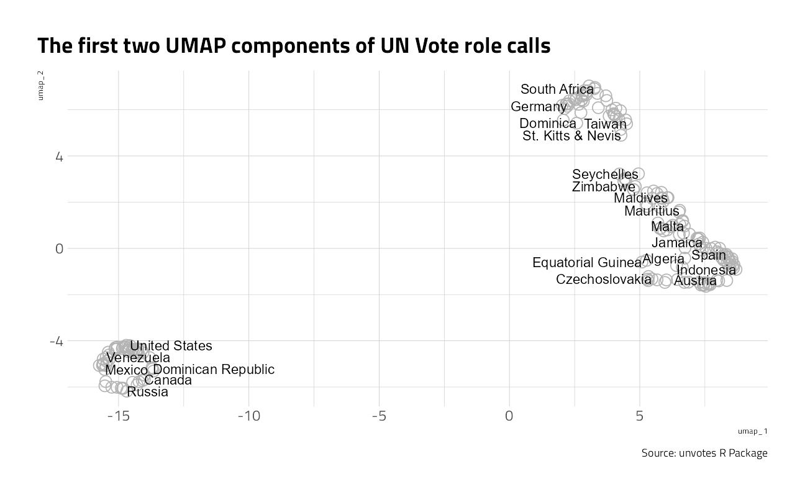
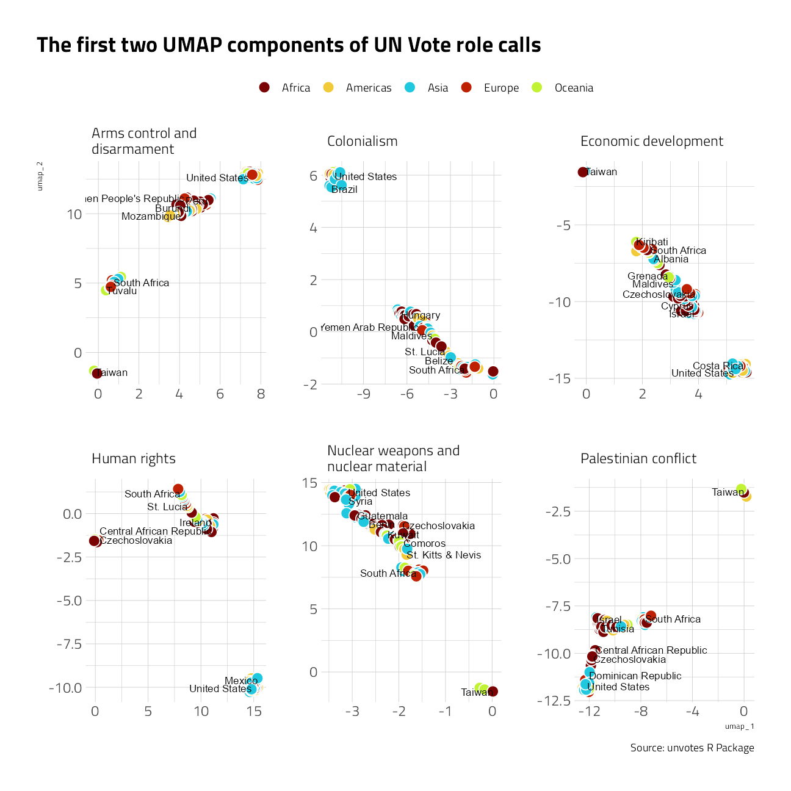

Last updated: 2021-10-05
Checks: 7 0
Knit directory: myTidyTuesday/
This reproducible R Markdown analysis was created with workflowr (version 1.6.2). The Checks tab describes the reproducibility checks that were applied when the results were created. The Past versions tab lists the development history.
Great! Since the R Markdown file has been committed to the Git repository, you know the exact version of the code that produced these results.
Great job! The global environment was empty. Objects defined in the global environment can affect the analysis in your R Markdown file in unknown ways. For reproduciblity it’s best to always run the code in an empty environment.
The command set.seed(20210907) was run prior to running the code in the R Markdown file. Setting a seed ensures that any results that rely on randomness, e.g. subsampling or permutations, are reproducible.
Great job! Recording the operating system, R version, and package versions is critical for reproducibility.
Nice! There were no cached chunks for this analysis, so you can be confident that you successfully produced the results during this run.
Great job! Using relative paths to the files within your workflowr project makes it easier to run your code on other machines.
Great! You are using Git for version control. Tracking code development and connecting the code version to the results is critical for reproducibility.
The results in this page were generated with repository version 11fbb8f. See the Past versions tab to see a history of the changes made to the R Markdown and HTML files.
Note that you need to be careful to ensure that all relevant files for the analysis have been committed to Git prior to generating the results (you can use wflow_publish or wflow_git_commit). workflowr only checks the R Markdown file, but you know if there are other scripts or data files that it depends on. Below is the status of the Git repository when the results were generated:
Ignored files:
Ignored: .Rhistory
Ignored: .Rproj.user/
Ignored: catboost_info/
Ignored: data/2021-09-08/
Ignored: data/CNHI_Excel_Chart.xlsx
Ignored: data/CommunityTreemap.jpeg
Ignored: data/Community_Roles.jpeg
Ignored: data/YammerDigitalDataScienceMembership.xlsx
Ignored: data/acs_poverty.rds
Ignored: data/fmhpi.rds
Ignored: data/grainstocks.rds
Ignored: data/hike_data.rds
Ignored: data/nber_rs.rmd
Ignored: data/us_states.rds
Ignored: data/us_states_hexgrid.geojson
Ignored: data/weatherstats_toronto_daily.csv
Untracked files:
Untracked: code/YammerReach.R
Untracked: code/work list batch targets.R
Unstaged changes:
Modified: code/_common.R
Note that any generated files, e.g. HTML, png, CSS, etc., are not included in this status report because it is ok for generated content to have uncommitted changes.
These are the previous versions of the repository in which changes were made to the R Markdown (analysis/2021_03_24_tidy_tuesday.Rmd) and HTML (docs/2021_03_24_tidy_tuesday.html) files. If you’ve configured a remote Git repository (see ?wflow_git_remote), click on the hyperlinks in the table below to view the files as they were in that past version.
| File | Version | Author | Date | Message |
|---|---|---|---|---|
| Rmd | 11fbb8f | opus1993 | 2021-10-05 | adopt _common.R theming |
suppressPackageStartupMessages({
library(tidyverse)
library(tidymodels)
library(embed)
library(lubridate)
library(hrbrthemes)
library(extrafont)
library(countrycode)
})
source(here::here("code","_common.R"),
verbose = FALSE,
local = knitr::knit_global())
ggplot2::theme_set(theme_jim(base_size = 12))This post is loosely based on Julia Silge’s series of screencasts demonstrating how to use tidymodels packages, and this post in particular.
Before embarking on this post, I plan to explore how the affinity groupings of countries changes over time.
This past Tuesday, David Robinson in his Youtube series demonstrated a quick way of unnesting tokens for exploring pairwise correlations between countries and topics. I’d like to try UMAP clustering to understand if this other path can be better. Let’s get started by loading the datasets.
tt <- tidytuesdayR::tt_load("2021-03-23")
Downloading file 1 of 3: `unvotes.csv`
Downloading file 2 of 3: `roll_calls.csv`
Downloading file 3 of 3: `issues.csv`unvotes_df <- left_join(tt$unvotes,
tt$roll_calls,
by = "rcid"
) %>%
inner_join(tt$issues,
by = "rcid"
) %>%
mutate(continent = countrycode(country,
origin = "country.name",
destination = "continent"
)) %>%
mutate(continent = case_when(
!is.na(continent) ~ continent,
country == "Czechoslovakia" ~ "Europe",
country == "German Democratic Republic" ~ "Europe",
country == "Yemen Arab Republic" ~ "Asia",
country == "Yemen People's Republic" ~ "Asia",
country == "Yugoslavia" ~ "Europe",
country == "Zanzibar" ~ "Africa"
)) %>%
select(country, continent, issue, rcid, vote) %>%
mutate(
vote = match(vote, c("no", "abstain", "yes")) - 2,
rcid = paste0("rcid_", rcid)
)
# select(country, continent, issue, rcid, vote) %>%
# pivot_wider(names_from = "rcid", values_from = "vote", values_fill = 0)Julia’s analysis only uses the recipes package, the tidymodels package for data preprocessing and feature engineering. step_umap creates a specification of a recipe step that will project a set of features into a two dimensional feature space.
umap_rec <- recipe(~., data = unvotes_df %>%
select(country, rcid, vote) %>%
pivot_wider(
names_from = "rcid",
values_from = "vote",
values_fn = length,
values_fill = 0
)) %>%
update_role(country, new_role = "id") %>%
step_umap(all_predictors(),
num_comp = 2,
retain = FALSE
)
umap_prep <- prep(umap_rec)
umap_prepRecipe
Inputs:
role #variables
id 1
predictor 4099
Training data contained 200 data points and no missing data.
Operations:
UMAP embedding for rcid_6, rcid_8, rcid_11, rcid_18, rcid_19, rci... [trained]Let’s visualize where countries are in the space created by this dimensionality reduction approach, for the first two components.
bake(umap_prep, new_data = NULL) %>%
ggplot(aes(umap_1, umap_2, label = country)) +
geom_point(
fill = NA,
pch = 21,
size = 4,
color = "gray70",
stroke = 0.6
) +
geom_text(
check_overlap = TRUE,
hjust = "inward"
) +
labs(
color = NULL,
title = "The first two UMAP components of UN Vote role calls",
caption = "Source: unvotes R Package"
)
An interesting clustering perspective on countries with similar voting records on the issues for the entire history since 1946.
I’d like to take another look, leveraging the UMAP clustered features and dates to build a model to predict the vote. Before we take that step, let’s look at a couple of visuals that others have built on a similar thought path.
First, Jenn Schilling built this beautiful faceted visual of the issues:
tweetrmd::include_tweet("https://twitter.com/datasciencejenn/status/1375892344604528640")#TidyTuesday for this week. I wrote a function to make my plots - that was super fun!
— Jenn Schilling (@datasciencejenn) March 27, 2021
Code: https://t.co/GusQoqoyQN#RStats #GGPlot2 #DataViz pic.twitter.com/Qx82RdyBVG
And Andy Baker built on Julia Silge’s UMAP reduction, but faceted by issue and continent:
tweetrmd::include_tweet("https://twitter.com/Andy_A_Baker/status/1376165962932649985")#TidyTuesday week 13 - UN votes
— Andy Baker (@Andy_A_Baker) March 28, 2021
UMAP dimensionality reduction for the UN voting patterns (inspired by @juliasilge) split by issue and continent.
Code: https://t.co/Gq7bhPk7kd#rstats #r4ds #dataviz pic.twitter.com/nXkDk0wSUK
Andy’s code filtered for each issue individually, ran the model for each issue, plotted for each issue, and then patchworked the visuals back together. I wonder what the result would be with the issue and continent in the model as Id’s:
umap_rec_full <- recipe(~., data = unvotes_df %>%
select(country, issue, continent, rcid, vote) %>%
pivot_wider(
names_from = "rcid",
values_from = "vote",
values_fn = length,
values_fill = 0
)) %>%
update_role(country, new_role = "id") %>%
update_role(continent, new_role = "id") %>%
step_umap(starts_with("rcid_"),
num_comp = 2,
retain = FALSE
)
umap_prep_full <- prep(umap_rec_full)
umap_prep_fullRecipe
Inputs:
role #variables
id 2
predictor 4100
Training data contained 1195 data points and no missing data.
Operations:
UMAP embedding for rcid_6, rcid_8, rcid_11, rcid_18, rcid_19, rci... [trained]bake(umap_prep_full, new_data = NULL) %>%
ggplot(aes(umap_1, umap_2, label = country, fill = continent)) +
geom_point(
pch = 21,
size = 4,
color = "white",
stroke = 0.6
) +
geom_text(
check_overlap = TRUE,
hjust = "inward"
) +
facet_wrap(~issue, scales = "free") +
labs(
color = NULL, fill = NULL,
title = "The first two UMAP components of UN Vote role calls",
caption = "Source: unvotes R Package"
) +
theme(legend.position = "top")
I am going to cut this analysis short. There is so much more that could be explored. For example, pairwise correlations, or resampling in time series, or resampling by geography in building predictive models. Shoutout to Jenn Schilling and Andy Baker for the great work this week.
sessionInfo()R version 4.1.1 (2021-08-10)
Platform: x86_64-w64-mingw32/x64 (64-bit)
Running under: Windows 10 x64 (build 22000)
Matrix products: default
locale:
[1] LC_COLLATE=English_United States.1252
[2] LC_CTYPE=English_United States.1252
[3] LC_MONETARY=English_United States.1252
[4] LC_NUMERIC=C
[5] LC_TIME=English_United States.1252
attached base packages:
[1] stats graphics grDevices utils datasets methods base
other attached packages:
[1] countrycode_1.3.0 extrafont_0.17 hrbrthemes_0.8.0 lubridate_1.7.10
[5] embed_0.1.4.9000 yardstick_0.0.8 workflowsets_0.1.0 workflows_0.2.3
[9] tune_0.1.6 rsample_0.1.0 recipes_0.1.17 parsnip_0.1.7.900
[13] modeldata_0.1.1 infer_1.0.0 dials_0.0.10 scales_1.1.1
[17] broom_0.7.9 tidymodels_0.1.4 forcats_0.5.1 stringr_1.4.0
[21] dplyr_1.0.7 purrr_0.3.4 readr_2.0.2 tidyr_1.1.4
[25] tibble_3.1.4 ggplot2_3.3.5 tidyverse_1.3.1 workflowr_1.6.2
loaded via a namespace (and not attached):
[1] readxl_1.3.1 backports_1.2.1 systemfonts_1.0.2
[4] selectr_0.4-2 plyr_1.8.6 tidytuesdayR_1.0.1
[7] splines_4.1.1 listenv_0.8.0 tfruns_1.5.0
[10] usethis_2.0.1 digest_0.6.28 foreach_1.5.1
[13] htmltools_0.5.2 viridis_0.6.1 fansi_0.5.0
[16] magrittr_2.0.1 tzdb_0.1.2 globals_0.14.0
[19] modelr_0.1.8 gower_0.2.2 vroom_1.5.5
[22] R.utils_2.11.0 extrafontdb_1.0 hardhat_0.1.6
[25] colorspace_2.0-2 rvest_1.0.1 textshaping_0.3.5
[28] haven_2.4.3 xfun_0.26 crayon_1.4.1
[31] jsonlite_1.7.2 zeallot_0.1.0 survival_3.2-11
[34] iterators_1.0.13 glue_1.4.2 gtable_0.3.0
[37] ipred_0.9-12 R.cache_0.15.0 tweetrmd_0.0.9
[40] Rttf2pt1_1.3.8 future.apply_1.8.1 DBI_1.1.1
[43] Rcpp_1.0.7 viridisLite_0.4.0 reticulate_1.22
[46] bit_4.0.4 GPfit_1.0-8 lava_1.6.10
[49] prodlim_2019.11.13 httr_1.4.2 ellipsis_0.3.2
[52] farver_2.1.0 R.methodsS3_1.8.1 pkgconfig_2.0.3
[55] nnet_7.3-16 sass_0.4.0 uwot_0.1.10
[58] dbplyr_2.1.1 utf8_1.2.2 here_1.0.1
[61] labeling_0.4.2 tidyselect_1.1.1 rlang_0.4.11
[64] DiceDesign_1.9 later_1.3.0 cachem_1.0.6
[67] munsell_0.5.0 cellranger_1.1.0 tools_4.1.1
[70] cli_3.0.1 generics_0.1.0 evaluate_0.14
[73] fastmap_1.1.0 ragg_1.1.3 yaml_2.2.1
[76] rematch2_2.1.2 bit64_4.0.5 knitr_1.36
[79] fs_1.5.0 future_1.22.1 whisker_0.4
[82] R.oo_1.24.0 xml2_1.3.2 compiler_4.1.1
[85] rstudioapi_0.13 curl_4.3.2 png_0.1-7
[88] reprex_2.0.1 lhs_1.1.3 bslib_0.3.0
[91] stringi_1.7.5 highr_0.9 RSpectra_0.16-0
[94] gdtools_0.2.3 lattice_0.20-44 Matrix_1.3-4
[97] styler_1.6.2 tensorflow_2.6.0 keras_2.6.1
[100] conflicted_1.0.4 vctrs_0.3.8 pillar_1.6.3
[103] lifecycle_1.0.1 furrr_0.2.3 jquerylib_0.1.4
[106] RcppAnnoy_0.0.19 httpuv_1.6.3 R6_2.5.1
[109] promises_1.2.0.1 gridExtra_2.3 parallelly_1.28.1
[112] codetools_0.2-18 MASS_7.3-54 assertthat_0.2.1
[115] rprojroot_2.0.2 withr_2.4.2 parallel_4.1.1
[118] hms_1.1.1 grid_4.1.1 rpart_4.1-15
[121] timeDate_3043.102 class_7.3-19 rmarkdown_2.11
[124] git2r_0.28.0 pROC_1.18.0 base64enc_0.1-3